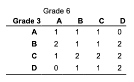
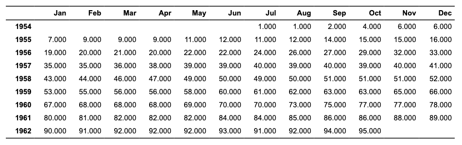

Get a flextable object from
a xtable object.
# S3 method for xtable
as_flextable(
x,
text.properties = fp_text_default(),
format.args = getOption("xtable.format.args", NULL),
rowname_col = "rowname",
hline.after = getOption("xtable.hline.after", c(-1, 0, nrow(x))),
NA.string = getOption("xtable.NA.string", ""),
include.rownames = TRUE,
rotate.colnames = getOption("xtable.rotate.colnames", FALSE),
...
)Arguments
- x
xtableobject- text.properties
default text formatting properties
- format.args
List of arguments for the formatC function. See argument
format.argsofprint.xtable. Not yet implemented.- rowname_col
colname used for row names column
- hline.after
see
?print.xtable.- NA.string
see
?print.xtable.- include.rownames
see
?print.xtable.- rotate.colnames
see
?print.xtable.- ...
unused arguments
Illustrations



See also
Other as_flextable methods:
as_flextable.data.frame(),
as_flextable.glm(),
as_flextable.grouped_data(),
as_flextable.htest(),
as_flextable.kmeans(),
as_flextable.lm(),
as_flextable.merMod(),
as_flextable.pam(),
as_flextable.summarizor(),
as_flextable.tabulator(),
as_flextable()
Examples
library(officer)
if( require("xtable") ){
data(tli)
tli.table <- xtable(tli[1:10, ])
align(tli.table) <- rep("r", 6)
align(tli.table) <- "|r|r|clr|r|"
ft_1 <- as_flextable(
tli.table,
rotate.colnames = TRUE,
include.rownames = FALSE)
ft_1 <- height(ft_1, i = 1, part = "header", height = 1)
ft_1
# \donttest{
Grade3 <- c("A","B","B","A","B","C","C","D","A","B",
"C","C","C","D","B","B","D","C","C","D")
Grade6 <- c("A","A","A","B","B","B","B","B","C","C",
"A","C","C","C","D","D","D","D","D","D")
Cohort <- table(Grade3, Grade6)
ft_2 <- as_flextable(xtable(Cohort))
ft_2 <- set_header_labels(ft_2, rowname = "Grade 3")
ft_2 <- autofit(ft_2)
ft_2 <- add_header(ft_2, A = "Grade 6")
ft_2 <- merge_at(ft_2, i = 1, j = seq_len( ncol(Cohort) ) + 1,
part = "header" )
ft_2 <- bold(ft_2, j = 1, bold = TRUE, part = "body")
ft_2 <- height_all(ft_2, part = "header", height = .4)
ft_2
temp.ts <- ts(cumsum(1 + round(rnorm(100), 0)),
start = c(1954, 7), frequency = 12)
ft_3 <- as_flextable(x = xtable(temp.ts, digits = 0),
NA.string = "-")
ft_3
# }
detach("package:xtable", unload = TRUE)
}
#> Loading required package: xtable
#>
#> Attaching package: ‘xtable’
#> The following object is masked from ‘package:flextable’:
#>
#> align
#> Warning: ‘xtable’ namespace cannot be unloaded:
#> namespace ‘xtable’ is imported by ‘shiny’ so cannot be unloaded